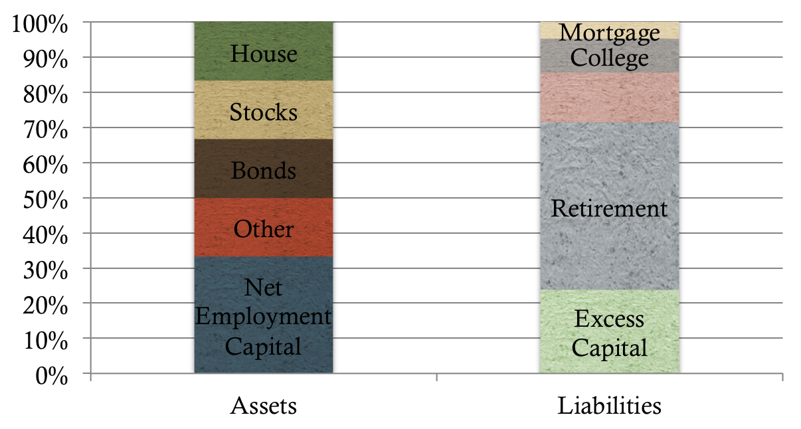

Basic Concepts and Definitions
Estates, Wills, and Probate
- Estate - all of the property a person owns or controls
- Estate planning - the process of preparing for the disposition of an estate upon or prior to death
- Will/testament - outlines the rights others will have over one's assets upon death
- Probate - legal process confirming the validity of a will
Legal Systems, Forced Heirship, and Marital Property Regimes
- Civil law - legal system that applies a set of codified core princiles to particular cases
Common law - legal system that draws abstract rules from prior cases
- Shari'a law - Islamic law; similar to civil law in the estate planning context
- Forced heirship rules - gives children the right to a fixed share of a parent's estate
- Community property regimes - each spouse accorded an indivisible 50% interest in income earned during marriage
- Separate property regimes - allows each spouse to own and control property independently
Income, Wealth, and Wealth Transfer Taxes
- Four general taxation types
- Income
- Spending
- Wealth
- Wealth transfers
Core Capital and Excess Capital
Hypothetical Life Balance Sheet

Estimating Core Capital with Mortality Tables
- Core capital can be estimated by discounting the expected spending over an individual's remaining life expectancy
- Survival probabilities can be determined using a mortality table
- Core capital = p(Survival1)×Spending1/(1+r)1 + ... + p(Survivalj)×Spendingj/(1+r)j
- Monte Carlo simulation may also be used to estimate core capital
Transferring Excess Capital
- Lifetime gifts and testamentary bequests considerations
- Tax-free gifts: RVTaxFreeGift = FVGift/FVBequest
- Taxable gifts: RVTaxableGift = FVGift/FVBequest
- Location of gift tax liability
- Generation skipping
- Valuation discounts
- Deemed dispositions
- Charitable gratuitous transfers
Estate Planning Tools
- Trusts - an arragement created by a settlor who transfers assets to a trustee
- Control - ability to make resources available to a beneficiary without yielding complete control
- Asset protection - gates the assets from claims against the settlor by creditors or other parties
- Tax reduction -
- Foundations - legal entity established to hold assets for a particular purpose (i.e. philanthropy)
- Life insurance - requires the payment of a premium in exchange for a contractual obligation to pay death benefit proceeds to a named beneficiary
Cross-Border Estate Planning
- The Hague Conference - organization working toward the convergence of private international law
- Tax system
- Source jurisdiction vs. residence jurisdiction
- Double taxation
- Residence-residence, source-source, and residence-source conflicts
- Foreign tax credit provisions
- Credit method: TCredit = Max[TResidence, TSource]
- Exemption method: TExemption = TSource
- Deduction method: TDeduction = TResidence+TSource(1-TResidence)
- Tax avoidance vs. tax evasion